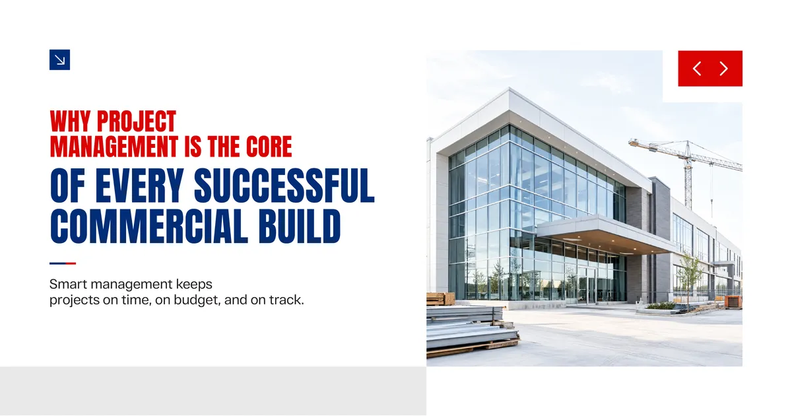
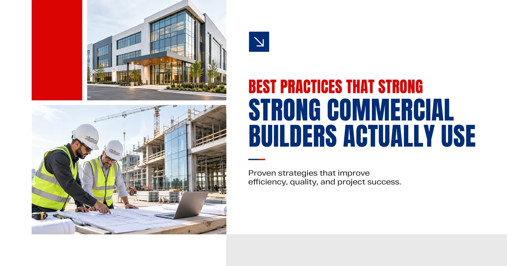
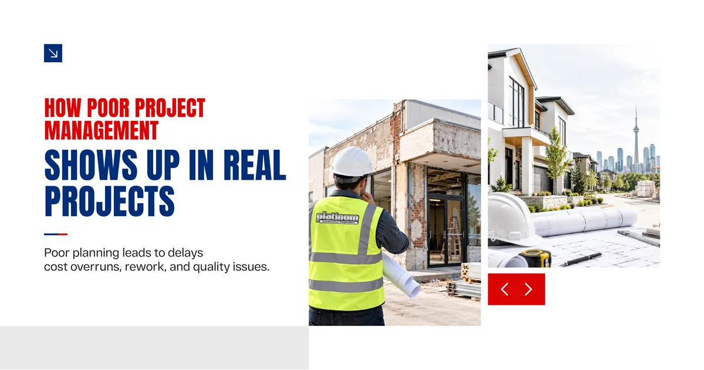
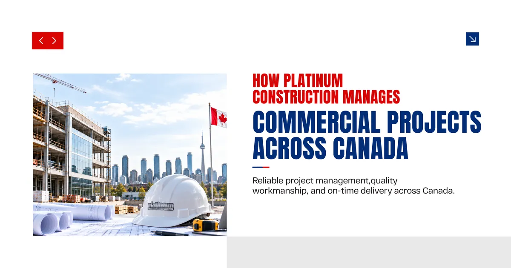
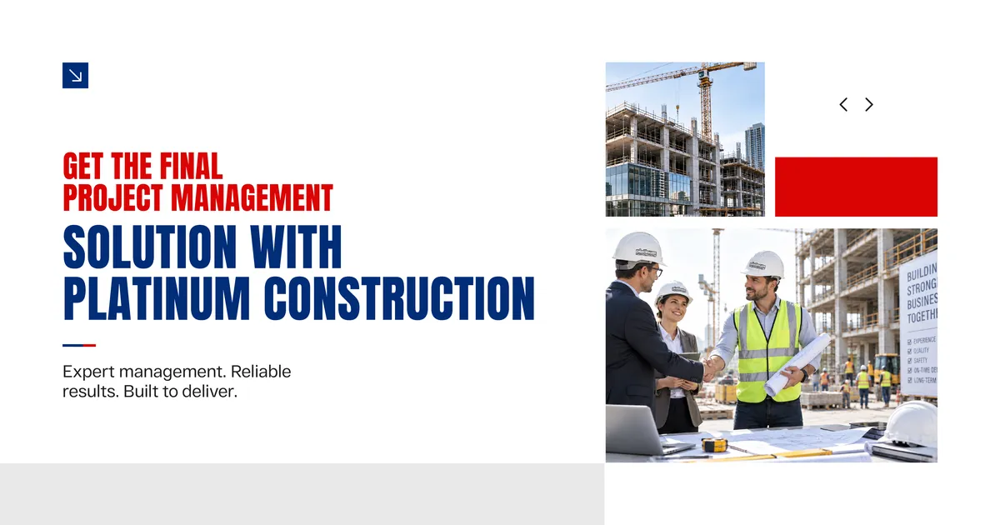

Permits, subcontractors, material deliveries, budget tracking, inspections, client approvals, and unexpected site conditions all happening at the same time, often with a fixed opening date sitting at the end of it all. Without strong project management holding everything together, even a well funded commercial project can fall apart in ways that are expensive and completely avoidable.
This guide covers the project management practices that actually make a difference in commercial construction, and why working with the right construction company in Canada from the start changes how the entire process feels.

Why Project Management Is the Core of Every Successful Commercial Build
Most people think about construction in terms of what gets built. Walls, floors, systems, finishes. Project management is the invisible layer underneath all of that, the thing that determines whether those elements come together on time, within budget, and without unnecessary stress.
A commercial project without strong management tends to follow a predictable pattern. Things start reasonably well, then a permit takes longer than expected, a subcontractor misses a deadline, a material order arrives with the wrong specs, and suddenly the timeline is three weeks behind and no one is quite sure who is responsible for fixing it..
One Accountable Project Manager Changes Everything
The single most important management decision on any commercial project is assigning one person who owns the outcome. Not a rotating cast of site supervisors, not a shared inbox no one checks consistently. One project manager who knows the schedule, knows the subcontractors, knows the client, and is reachable when something needs a decision.
This matters more than most clients realize until they have experienced the alternative. When something goes wrong on a complex commercial build, the speed of the response often determines whether it becomes a minor delay or a major one.

Best Practices That Strong Commercial Builders Actually Use
These are not theoretical ideas. These are the practices that separate commercial construction companies who consistently deliver from the ones who consistently disappoint.
Detailed Pre Construction Planning
The work that happens before a single wall goes up often determines how the rest of the project goes. Pre construction planning covers design review, permit applications, subcontractor selection, procurement lead times, and a realistic project schedule built around actual timelines, not optimistic ones.
A construction company in Canada that skips or rushes this phase usually pays for it later in the form of delays, change orders, and frustrated clients.
Realistic Scheduling With Buffer Built In
Every experienced project manager knows that something unexpected will happen on a commercial build. The question is not whether surprises will occur, but whether the schedule has room to absorb them without derailing the whole project.
Building realistic buffers into key phases, especially permitting and inspection stages, is one of the simplest and most effective practices a building construction company can apply.
Transparent Budget Tracking
Budget surprises are one of the most damaging things that can happen to a client relationship on a construction project. Strong commercial project management means tracking costs in real time against the approved budget, flagging any variances early, and processing change orders through a clear approval process rather than adding them quietly to the final invoice.
Proactive Communication, Not Reactive Updates
A client should never have to chase their construction company for a project update. Regular progress reports, scheduled site meetings, and clear communication about upcoming decisions keep everyone aligned and reduce the anxiety that naturally comes with a large construction investment.
Local construction companies who manage projects well tend to communicate proactively as a habit, not just when something goes wrong.
Quality Control at Every Phase
Commercial construction quality is not something that gets checked at the end of the project. It gets checked continuously throughout, at every stage from foundation through finishing. Issues caught early cost far less to fix than issues discovered during the final walkthrough.
Subcontractor Coordination and Accountability
A commercial project involves many specialized trades working in sequence and sometimes in parallel. Strong project management means knowing exactly when each trade needs to be on site, ensuring they show up prepared, and holding them accountable when something does not meet standard.
Commercial builders with established subcontractor relationships tend to manage this coordination more smoothly than firms pulling in unfamiliar crews for each new project.
Here is a clear look at how these practices translate into measurable project outcomes.
| Best Practice | What It Prevents |
|---|---|
| Detailed pre construction planning | Mid project scope changes and permit delays |
| Realistic scheduling with buffers | Timeline collapse from unexpected site conditions |
| Transparent budget tracking | Surprise invoices and client disputes |
| Proactive communication | Anxiety, misaligned expectations, and poor decisions under pressure |
| Continuous quality control | Expensive rework after handover |
| Strong subcontractor coordination | Trade delays and sequencing problems |

How Poor Project Management Shows Up in Real Projects
It helps to understand what a poorly managed commercial project actually looks like, because the warning signs are usually there early.
A vague initial estimate that keeps growing is usually a sign that costs were not properly planned at the start. A project manager who only calls when there is a problem suggests that proactive communication is not part of how the company works. Subcontractors arriving unprepared or out of sequence points to coordination gaps that tend to compound over time.
None of these issues are unique to small construction companies. Even well resourced industrial construction companies can run projects poorly if the management culture is not strong. The size of the firm matters far less than the discipline of the team running the job.
What to Look for When Choosing a Commercial Construction Partner
Choosing the right partner is really choosing the right management team. The tools and materials are largely similar across the industry. The difference is in how the project is run.
| What to Evaluate | Strong Signal | Weak Signal |
|---|---|---|
| Pre construction process | Detailed planning meeting with written scope | Verbal discussion and quick estimate |
| Project manager assignment | Named individual assigned from day one | Will be assigned once project starts |
| Scheduling approach | Milestone schedule with buffer weeks built in | Single completion date with no breakdown |
| Budget communication | Weekly cost tracking shared with client | Invoice at completion |
| Subcontractor network | Established relationships with vetted trades | Open to whoever is available |
| References | Willing to connect with past commercial clients | References available upon request only |

How Platinum Construction Manages Commercial Projects Across Canada
At Platinum Construction, project management is not a department that exists alongside construction. It is the foundation that every project is built on.
Every commercial project we take on is assigned a dedicated project manager from the first planning conversation through to final handover. That person owns the schedule, coordinates every trade, manages the budget, and communicates with the client on a regular and consistent basis throughout the entire build.
We operate across Ontario, British Columbia, Alberta, Saskatchewan, and Atlantic Canada. Our teams understand the regional differences in permit timelines, inspection processes, and local subcontractor markets that affect how commercial projects need to be managed in different parts of the country. A project in Vancouver moves through approvals differently than one in Calgary or Halifax, and our management approach reflects that.
We also apply the same management discipline to projects of different scales. Whether the build is a mid size office fit out, a retail development, or a more complex commercial facility, the practices do not change. Detailed planning, honest communication, continuous quality checks, and a single accountable project lead are standard on every job.
Frequently Asked Questions
What is the most important part of commercial construction project management
Having one accountable project manager who owns the schedule and communicates consistently is typically the single most impactful factor in how a commercial project goes.
How do construction companies avoid budget overruns
Detailed pre construction planning, accurate initial estimates, and real time budget tracking with transparent change order processes are the practices that keep costs under control.
Why do commercial construction timelines slip so often
Permit delays, subcontractor gaps, and poor pre construction planning are the most common causes. Realistic scheduling with built in buffers helps absorb these issues before they become major problems.
How often should a construction company update clients during a project
At minimum weekly, with more frequent communication during critical phases or when decisions need to be made quickly. Clients should never have to ask for updates.
What makes local construction companies a better choice for commercial projects
Local construction companies understand regional permit processes, have established subcontractor relationships, and can respond quickly to site issues without the lag that comes with managing from a distant office.
How does quality control work on a commercial construction site
Quality is checked continuously throughout the project at each phase, not only at the end. This means catching issues early when they are inexpensive to fix rather than after the project is complete.
What should I expect during the handover stage of a commercial project
A strong handover includes a final walkthrough, complete project documentation, warranty details, and a clear process for addressing any outstanding items discovered after occupancy.

Get the final project management solution with Platinum Construction
Commercial construction project management is not a background process that runs itself. It is an active, disciplined practice that determines whether your project delivers what it promised or becomes a source of stress and unexpected costs.
Working with a construction company in Canada that takes management seriously, rather than treating it as secondary to the physical build, is one of the most valuable decisions a business owner or developer can make.
If you are planning a commercial project and want a team where strong project management is simply part of how the job gets done, Platinum Construction is ready to talk. Visit platinumconstruction.com to start the conversation.